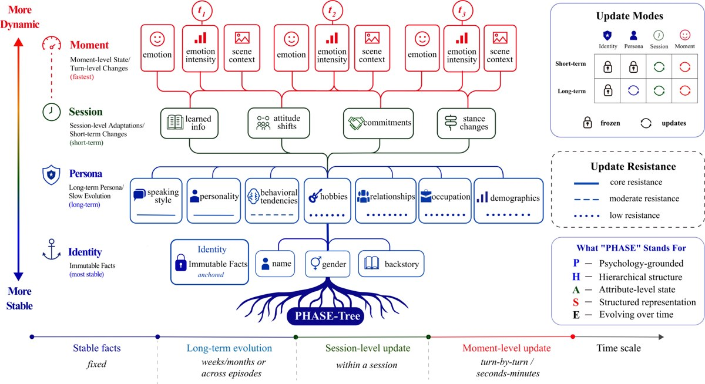

PHASE-Tree: Modeling Character-State Evolution in Long-Horizon Role-Playing Dialogue
arXiv 2026* = Co-equal primary authors

In brief
PHASE-Tree is a four-layer character-state tree so role-playing models speak from who the character is now, not a stale profile — plus a benchmark to prove it. An immutable identity root (name, gender, append-only backstory) branches into persona, session, and moment layers ordered by how fast they change; each mutable field updates independently, with long-term persona changes gated by resistance, evidence, and cooldown rules. The benchmark, LongEvoRoleBench, turns eight role-playing corpora — from Friends to Harry Potter — into a unified next-utterance test scored against the character's current state. Serialized into the prompt, PHASE-Tree beats every rival prompt-based method on all four long-dialogue corpora across all three metrics, and the code, benchmark, and models are publicly released.
Key takeaways
- Long-horizon role-playing has a signature breakdown the paper names stale-state failure: a model keeps Chandler Bing's sarcastic voice (Friends) but still treats commitment as a punchline in a marriage scene — it remembers how the character talks while forgetting who they have become.
- PHASE-Tree gates character change the way narratives pace it: core traits like personality evolve only on repeated high-significance evidence spanning 16+ episodes — most of a season — while a relationship can flip from a single decisive scene.
- The LongEvoRoleBench benchmark rebuilds eight role-playing corpora into one predict-the-character's-next-line test — four long-running series (Friends, The Office, Star Trek, Harry Potter) for cross-episode evolution, four short-dialogue sets as controls — scoring each reply against who the character is now, not their frozen starting profile.
- In the prompt-based setting, PHASE-Tree sweeps every long-dialogue comparison against external baselines — improving character, semantic, and embedding scores by 19.7%, 12.4%, and 15.1% over the strongest baseline on each — and still leads the semantic average on the short-dialogue controls.
- Surprise from the ablations: on the long-dialogue core, a structured tree alone scores worse than simply letting an LLM rewrite the raw profile — the gains appear only once the tree also tracks what the character just learned and felt in the current scene, the one addition that improves all three metrics at once.
- The same state can instead be baked into a small LoRA adapter, shrinking a ~1,700-token profile-heavy prompt to dialogue only — but the network that converts profiles into adapters compresses away state detail and trails the prompting route, a limitation the paper leaves open.
- Trust checks: a blinded 200-response human study correlates moderately with the automated GPT-4.1 grader (Pearson r = 0.65), and the long-dialogue semantic advantage holds across grader models and four different base LLMs.
Abstract
Long-horizon role-playing demands that characters remain recognizable as they evolve with the narrative. Yet existing work falls short on two fronts: representations are typically static profiles that cannot be updated locally without destabilizing unchanged traits, and benchmarks mainly test persona preservation and memory recall rather than whether a model speaks from a character’s currently evolved state. We address both. PHASE-Tree is a multi-timescale character-state tree with an immutable identity root and mutable persona, session, and moment layers, making each mutable field an addressable target for localized within- and cross-episode updates. It conditions generation through explicit textual provision or implicit parametric adaptation. To measure evolved-state generation, we introduce LongEvoRoleBench, which pairs four long-dialogue corpora for cross-episode evolution with four short-dialogue corpora as within-scene state-tracking checks, under a unified next-utterance protocol. On the long-dialogue core, textual PHASE-Tree ranks first in 11 of 12 dataset–metric cells against internal variants and all 12 cells against external textual baselines, improving character-level, semantic, and embedding scores by 19.7%, 12.4%, and 15.1% respectively. In a blinded 200-response study, human ratings correlate with the GPT-4.1 judge (Pearson r = 0.65); on descriptive n = 10 PT and NR prompt subsets, the Overall difference is +0.20. The long-dialogue Sem advantage persists across LLM judges and generation backbones.
BibTeX
@misc{phasetree,
title = {{PHASE-Tree}: Modeling {Character-State} Evolution in {Long-Horizon} {Role-Playing} Dialogue},
author = {Tang, Bo and Yang, Jianan and Zhu, Junyi and Wu, Yiquan and Zhao, Rui and Yang, Zhengyu and Zhang, Yang and Xiong, Feiyu and Li, Zhiyu and Shen, Jiajun},
year = {2026},
eprint = {2608.06975},
archivePrefix = {arXiv},
primaryClass = {cs.CL},
doi = {10.48550/arXiv.2608.06975},
url = {https://arxiv.org/abs/2608.06975},
}